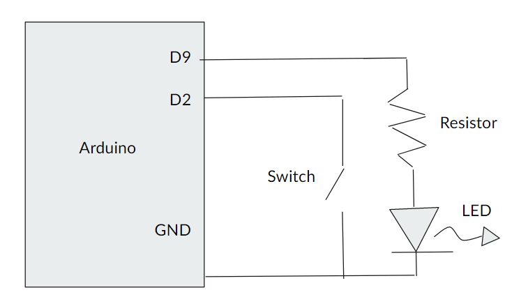

Electronics Bash - #16- Hardware Interrupts
Writing interactive code without interrupts can be like waiting for a letter to come - you have to keep checking the mailbox to see if any new info has arrived. Interrupts are like an alarm on your mailbox that draws your attention so you don't need to keep checking. They're powerful, useful, and a little finicky - they'll be our subject this week.
Topics Include:
- Interrupts
- ISRs
- The 'volatile' quantifier
- Timers

Code Libraries
This week we’ll be making extensive use of the EnableInterrupt Library to to handle Pin Change interrupts. You can download it from the link above.
Code

Interrupts Basic
Click here to view code on GithubInterrupts Serial
Click here to view code on GithubInterrupts Serial Debounce
Click here to view code on GithubInterrupts Array
Click here to view code on GithubEnable Interrupts - Simple Example
Click here to view code on Github